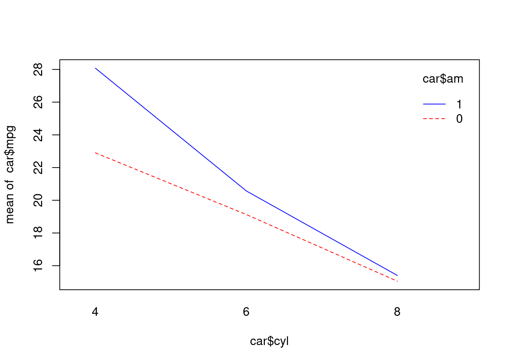
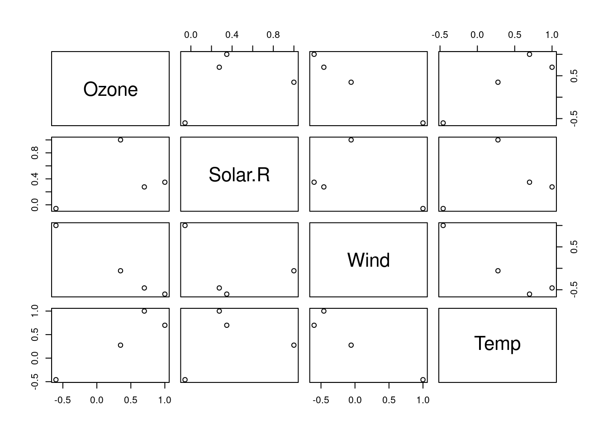
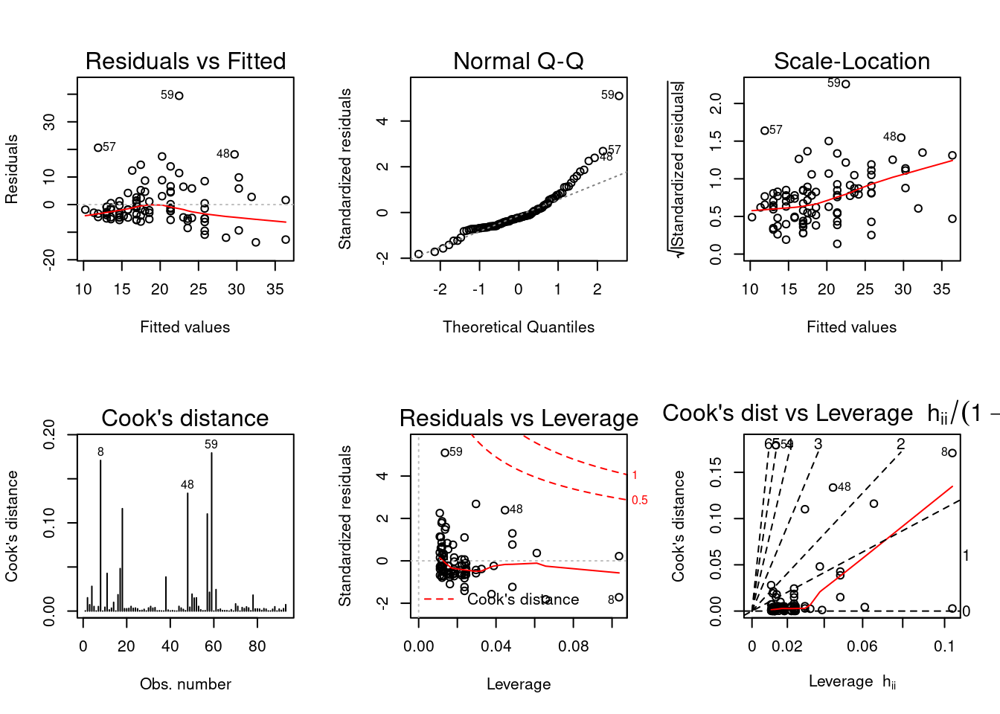

3 통계분석
- 통계란 특정집단을 대상으로 수행한 조사나 실험을 통해 나온 결과에 대한 요약된 형태의 표현이다.
- 조사 또는 실험을 통해 데이터를 확보하며, 조사대상에 따라 총조사와 표본 조사로 구분한다.
3.1 통계 자료의 획득방법
3.1.1 총조사/전수 조사(census)
3.1.2 표본조사
3.1.2.1 표본추출 방법 (데이터 샘플링)
3.1.2.1.1 단순 임의 추출법 (simple random sampling)
- 전체 데이터에서 데이터를 선택할 확률을 모두 동일하게 하여 표본을 추출하는 방법이다. 복원추출은 한번 선택한 표본을 다시 추출할 수 있는 방법이며, 비복원추출은 한번 선택된 표본은 다시 추출할 수 없는 방법이다.
- 일반적으로 데이터를 training data와 test data로 분할할 때 가장 많이 사용하는 표본추출 방법이다.
Q. iris 데이터로 분석을 진행하기 위해 전체 데이터를 7:3의 비율로 training data와 test data를 추출한 뒤 새로운 변수에 저장해 보자. (데이터 추출 방법은 단순 임의 추출을 이용한다.)
# iris 데이터 행의 개수에서 70%에 해당하는 행번호를 랜덤으로 추출
# nrow(): 데이터의 행 개수를 산출해 주는 함수
idx <- sample(1:nrow(iris), nrow(iris)*0.7, replace=FALSE)
training<-iris[idx,]
head(training)## Sepal.Length Sepal.Width Petal.Length Petal.Width Species SL_new
## 51 7.0 3.2 4.7 1.4 versicolor 0.7500000
## 66 6.7 3.1 4.4 1.4 versicolor 0.6666667
## 145 6.7 3.3 5.7 2.5 virginica 0.6666667
## 115 5.8 2.8 5.1 2.4 virginica 0.4166667
## 106 7.6 3.0 6.6 2.1 virginica 0.9166667
## 99 5.1 2.5 3.0 1.1 versicolor 0.2222222test<-iris[-idx,]
head(test)## Sepal.Length Sepal.Width Petal.Length Petal.Width Species SL_new
## 2 4.9 3.0 1.4 0.2 setosa 0.16666667
## 4 4.6 3.1 1.5 0.2 setosa 0.08333333
## 6 5.4 3.9 1.7 0.4 setosa 0.30555556
## 11 5.4 3.7 1.5 0.2 setosa 0.30555556
## 12 4.8 3.4 1.6 0.2 setosa 0.13888889
## 14 4.3 3.0 1.1 0.1 setosa 0.000000003.1.2.1.2 계통추출법 (systematic sampling)
3.1.2.1.3 집락추출법 (cluster random sampling)
3.1.2.1.4 층화추출법 (stratified random sampling)
- 특정 데이터가 여성 계층 70%, 남성 계층 30%로 구성되어 있다고 가정해 보자. 각 계층을 고루 대표할 수 있도록 표본을 추출하기 위해서는 여성과 남성 집단에 대해 0.7:0.3의 비율로 데이터를 뽑아야 한다. 이처럼 여성과 남성이라는 계층별로 표본을 추출하는 것을 층화 임의 추출이라고 한다.
Q. iris 데이터에서 species가 setosa인 데이터를 20개, versicolor인 데이터를 15개, versinica인 데이터를 15개씩 층화 임의 추출을 사용해 추출해 보자.
strata(data, stratanames=NULL, size,
method=c("srswor","srswr","poisson","systematic"), pik, descrption=FALSE)| 인자 | 설명 |
|---|---|
| data | 표본을 추출할 데이터프레임 또는 행렬 |
| stratanames | 데이터에서 계층(집단)을 구분하는 변수들 (여러개일 경우 c()안에 나열) |
| size | 각 계층에서 추출할 데이터의 개수 |
| method | 데이터를 뽑는 방법 지정srswor: 비복원 단순 임의 추출srswr: 복원 단순 임의 추출poisson: 포아송 추출systematic: 계통 추출 |
install.packages(setdiff("sampling", rownames(installed.packages())))
library(sampling)
sample<-strata(data=iris, c("Species"), size=c(20,15,15), method="srswor")
head(sample)## Species ID_unit Prob Stratum
## 2 setosa 2 0.4 1
## 9 setosa 9 0.4 1
## 10 setosa 10 0.4 1
## 11 setosa 11 0.4 1
## 12 setosa 12 0.4 1
## 13 setosa 13 0.4 1iris_sample<-getdata(iris, sample)
head(iris_sample)## Sepal.Length Sepal.Width Petal.Length Petal.Width SL_new Species ID_unit
## 2 4.9 3.0 1.4 0.2 0.16666667 setosa 2
## 9 4.4 2.9 1.4 0.2 0.02777778 setosa 9
## 10 4.9 3.1 1.5 0.1 0.16666667 setosa 10
## 11 5.4 3.7 1.5 0.2 0.30555556 setosa 11
## 12 4.8 3.4 1.6 0.2 0.13888889 setosa 12
## 13 4.8 3.0 1.4 0.1 0.13888889 setosa 13
## Prob Stratum
## 2 0.4 1
## 9 0.4 1
## 10 0.4 1
## 11 0.4 1
## 12 0.4 1
## 13 0.4 1table(iris_sample$Species)##
## setosa versicolor virginica
## 20 15 153.1.2.1.5 다단계 추출 (multi-stage sampling)
3.2 T-검정 (T-Test)
T-검정은 두 집단의 평균을 통계적으로 비교하기 위해 사용하는 검정방법이다. 어떤 방식으로 집단의 평균을 비교하느냐에 따라 일표본 T-검정, 대응표본 T-검정, 독립표본 T-검정으로 나누어진다.
3.2.1 일표본 T-검정 (One Sample T-Test)
3.2.1.1 일표본 T-검정이란?
- 단일모집단에서 관심이 있는 연속형 변수의 평균값을 특정 기준값과 비교하고자 할 때 사용하는 검정방법이다.
- 예를 들어 A과수원에서 생산되는 사과의 평균 무게가 200g이라고 알려져 있을 때, 실제로 A과수원에서 생산되는 전체 사과의 평균 무게가 200g인지 알아보고 싶은 경우에 일표본 t-검정을 수행할 수 있다.
- 단일모집단에서 알고자 하는 값이 종속변수가 되며, 설정한 기준값과 종속변수의 평균값 사이의 차이가 통계적으로 유의하다면 귀무가설이 기각되고 대립가설이 채택됨으로써 두값이 다르다고 결론을 내릴 수 있다.
3.2.1.2 일표본 T-검정의 가정
- 모집단의 구성요소들이 정규분포를 이룬다는 가정
- 종속변수는 연속형 변수여야 하며, 검증하고자 하는 기준값이 있어야 한다.
3.2.1.3 일표본 T-검정의 단계
- 가설 설정
- 유의수준 설정
- 검정통계량의 값 및 유의확률 계산
- 귀무가설의 기각여부 판단 및 의사결정
- 일표본 T-검정을 수행하기 전 표본에 대한 정규성을 검정해야 할 경우 샤피로-윈크 검정, 콜모고로프 스미르노프 검정, Q-Q도를 통한 확인 등 다양한 방법을 활용할 수 있다. 그 중에서 샤피로-윌크 검정이 많이 사용된다.
- 샤피로-윌크 검정의 귀무가설은 “데이터가 정규분포를 따른다.”이고, 대립가설은 “데이터가 정규분포를 따르지 않는다.”이다. 따라서 검정 결과로 나오는 p-value값에 따라 데이터의 정규성을 확인할 수 있다.
- 샤피로-윌크 검정은 아래와 같이 shapiro.test함수를 통해 수행하며, data 자리에는 정규성 검정을 수행할 데이터 프레임을 지정한다.
shapiro.test(data)- 데이터가 정규분포를 따른다는 가정을 만족한 경우, t.test라는 함수를 이용하여 일표본-T검정을 수행한다. 반면 데이터가 정규성을 만족하지 않는 경우, wilcox.test 함수를 이용해 T-검정을 수행한다.
t.test(x, alternative=c("two.sided","less","greater"), mu=0)
wilcox.test(x, alternative=c("two.sided","less","greater"), mu=0)| 인자 | 설명 |
|---|---|
| x | 표본으로부터 관측한 값(수치형 벡터) |
| alternative | 양측검정: “two.sided”입력단측검정: 표본평균이 특정값보다 작은지에 대해 검정을 수행할 시 “less”를 입력, 특정값보다 큰지에 대한 검정수행시 “greater”를 입력 |
| mu | 검정시 기준이 되는 값 |
Q. MASS 패키지의 cats데이터는 고양이들의 성별, 몸무게, 심장의 무게를 담고 있다. cats데이터에서 고양이들의 평균몸무게가 2.6kg인지 아닌지에 대한 통계적 검정을 수행하고, 결과를 해석해보자. (양측검정 수행, 유의수준=0.05)
검정을 수행하기에 앞서 설정할 수 있는 가설은 아래와 같다.
귀무가설(H0): 고양이들의 평균 몸무게는 2.6kg이다.
대립가설(H1): 고양이들의 평균 몸무게는 2.6kg가 아니다.cats 데이터 확인 및 Bwt변수에 대한 정규성 검정 수행
library(MASS)
head(cats)## Sex Bwt Hwt
## 1 F 2.0 7.0
## 2 F 2.0 7.4
## 3 F 2.0 9.5
## 4 F 2.1 7.2
## 5 F 2.1 7.3
## 6 F 2.1 7.6str(cats)## 'data.frame': 144 obs. of 3 variables:
## $ Sex: Factor w/ 2 levels "F","M": 1 1 1 1 1 1 1 1 1 1 ...
## $ Bwt: num 2 2 2 2.1 2.1 2.1 2.1 2.1 2.1 2.1 ...
## $ Hwt: num 7 7.4 9.5 7.2 7.3 7.6 8.1 8.2 8.3 8.5 ...shapiro.test(cats$Bwt)##
## Shapiro-Wilk normality test
##
## data: cats$Bwt
## W = 0.95188, p-value = 6.731e-05정규성 검정의 결과 p-value가 6.731e-05로 유의수준 0.05보다 작기 때문에 ‘데이터가 정규분포를 따른다’(=정규성을 만족한다.) 라는 귀무가설을 기각한다. 즉, cats 데이터의 Bwt 변수는 정규분포를 따르지 않으므로 wilcox.test 함수를 이용해 T-검정을 수행한다.
cats 데이터에 대한 일표본 T-검정 수행
wilcox.test(cats$Bwt, mu=2.6, alternative="two.sided")##
## Wilcoxon signed rank test with continuity correction
##
## data: cats$Bwt
## V = 5607, p-value = 0.02532
## alternative hypothesis: true location is not equal to 2.6- 표본평균이 특정값과 같은지에 대해 알아보는 양측검정을 수행하는 것이기 때문에 wilcox.test 함수의 alternative(검정방향)에는 “two.sided”값을 지정하면 된다. wilcox 검정 결과 p-value는 0.02532로 유의수준 0.05 보다 작다. 따라서 귀무가설 ’고양이들의 평균 몸무게(Bwt 변수값의 평균)는 2.6(kg)이다.’을 기각하며, 고양이들의 평균 몸무게는 2.6kg이 아니라는 결론을 내릴 수 있다.
3.2.2 대응표본 T-검정 (Paired Sample T-Test)
3.2.2.1 대응표본 T-검정이란?
- 단일모집단에 대해 두 번의 처리를 가했을 때, 두 개의 처리에 따른 평균의 차이를 비교하고자 할 때 사용하는 검정방법이다.
- 예를 들어 어느 기업에서 판매사원들의 역량 향상을 위해 두 가지 방법으로 직업교육을 실시하고 나서, 두 가지 교육방법에 따른 판매실적 평균에 차이가 있는지를 검정하고자 할 때 대응표본 t-검정을 사용할 수 있다. 이때 ’직업교육 방법’이 독립변수, 그에 따른 ’판매실적’이 종속변수가 된다.
- 하나의 모집단에서 크기가 n개인 하나의 표본을 추출한 후, 표본 내의 개체들에 대해서 두 번의 측정을 실시한다. 따라서 관측값들은 서로 독립적이지 않고 쌍(pair)으로 이루어져 있어 대응표본 t-검정을 짝지어진 t-검정 (matched pair t-test)이라고도 한다.
- 모집단과 표본은 하나씩이지만, 각 개체들에 대해 두 개씩이ㅡ 관측값이 존재하므로 모수는 두 개다.
- 표본 내에 있는 각 개체별로 짝지어진 관측값 사이에 차이가 있는지를 검정하므로 자료의 형태는 아래의 표와 같다.
| 개체 | 관측값1(A) | 관측값2(B) | 차이(A-B=D) |
|---|---|---|---|
| 1 | A1 | B1 | A1-B1=D1 |
| 2 | A2 | B2 | A2-B2=D2 |
| … | … | … | … |
| n | An | Bn | An-Bn=Dn |
3.2.2.2 대응표본 T검정의 가정
- 대응표본 t-검정에서는 모집단의 관측값이 정규성(정규분포를 만족한다는 가정)을 만족해야 한다.
- 종속변수는 연속형 변수이어야 한다.
3.2.2.3 대응표본 T검정의 단계
- 가설 검정
- 귀무가설(H0): 2개의 모평균 간에는 차이가 없다. (\(\mu_{x}-\mu_{y}-D=0\))
- 대립가설(H1):
- 2개의 모평균 간에는 차이가 있다. (\(\mu_{x}-\mu_{y}-D\ne0\)) - 양측검정
- 2개의 모평균 간의 차이는 0보다 크다. (\(\mu_{x}-\mu_{y}-D>0\)) - 우단측검정
- 2개의 모평균 간의 차이는 0보다 작다. (\(\mu_{x}-\mu_{y}-D<0\)) - 좌단측검정
- 유의수준 설정
- 검정통계량의 값 및 유의확률 계산
- 귀무가설의 기각여부 판단 및 의사결정
t.test(x, y, alternative=c("two.sided","less","greater"), paired=FALSE, m=0)Q. 10명의 환자를 대상으로 수면영양제를 복용하기 전과 후의 수면시간을 측정하여 영양제의 효과가 있는지를 판단하고자 한다. 영양제 복용 전과 후의 평균 수면시간에 차이가 있는지를 알아보는데, 단측검정을 수행하여 영양제 복용 후에 수면시간이 더 늘어났는지를 검정해보자. 수면영양제를 복용하기 전과 후의 수면시간은 아래에 제시된 바와 같다. (표본이 정규성을 만족한다는 가정하에 단측검정 수행, 유의수준=0.05)
- 검정을 수행하기에 앞서 설정할 수 있는 가설은 아래와 같다.
귀무가설(H0): 수면영양제를 복용하기 전과 후의 평균 수면시간에는 차이가 없다. (\(\mu_{x}-\mu_{y}-D=0\))
대립가설(H1): 수면영양제를 복용하기 전과 후의 평균 수면시간 차이는 0보다 작다. 즉, 수면영양제를 복용한 후 평균수면시간이 늘어났다. (\(\mu_{x}-\mu_{y}-D<0\)) - 수면 영양제 복용 전 10명의 환자들의 수면시간: 7, 3, 4, 5, 2, 1, 6, 6, 5, 4
수면 영양제 복용 후 10명의 환자들의 수면시간: 8, 4, 5, 6, 2, 3, 6, 8, 6, 5 - 데이터 입력
(data<-data.frame(before=c(7,3,4,5,2,1,6,6,5,4), after=c(8,4,5,6,2,3,6,8,6,5)))## before after
## 1 7 8
## 2 3 4
## 3 4 5
## 4 5 6
## 5 2 2
## 6 1 3
## 7 6 6
## 8 6 8
## 9 5 6
## 10 4 5- 대응표본 T-검정수행
t.test(data$before, data$after, alternative="less", paired=TRUE)##
## Paired t-test
##
## data: data$before and data$after
## t = -4.7434, df = 9, p-value = 0.0005269
## alternative hypothesis: true difference in means is less than 0
## 95 percent confidence interval:
## -Inf -0.6135459
## sample estimates:
## mean of the differences
## -1- 수면 영양제를 복용하기 전과 후의 평균 수면시간 차이가 비교하고자 하는 값(0)보다 작은지에 대하여 검정을 수행하기 때문에 alternative 인자에는 “less”를 입력한다.
- 대응표본 t-검정 수행 결과, 검정통계량(t값)은 -4.7434, df(자유도)는 9, 유의확률(p-value)은 0.0005269이다. p-value가 유의수준 0.05보다 작기 때문에 귀무가설을 기각하고, ’수면영양제를 복용하기 전과 후의 평균 수면시간의 차이는 통계적으로 유의하며, 영양제를 복용한 후 수면시간이 늘었다.’라는 결론을 내릴 수 있다.
3.2.3 독립표본 T-검정 (Independent Sample T-Test)
3.2.3.1 독립표본 T-검정이란?
- 두개의 독립된 모집단의 평균을 비교하고자 할 때 사용하는 검정방법이다.
- 예를 들어 성별에 따라 출근준비시간에 차이가 있는지를 통계적으로 검정하기 위해서 독립표본 t-검정을 사용할 수 있다. 이 때 그룹(집단)을 나누는 기준인 ’성별’이 독립변수이고, 그에 따른 관리값인 ’출근준비시간’이 종속변수이다.
- 두개의 모집단에서 크기가 n개인 표본을 각각 추출한 후 표본의 관측값들을 이용해 검정을 실시한다. 따라서 독립표본 t-검정에서는 모집단, 모수, 표본이 모두 두 개씩 존재한다.
3.2.3.2 독립표본 T-검정의 가정
- 두 모집단은 정규성을 만족해야 한다.
- 독립표본 t-검정에서 두 개의 모집단은 서로 독립적이어야 한다.
- 두 모집단의 분산이 서로 같음을 의미하는 등분산성 가정을 확인해야 한다. 등분산 가정은 비교하고자 하는 두 독립 집단의 모분산이 동일함을 의미하며, 등분산성 만족여부에 따라 다른 계산 방법이 사용된다. 따라서 이 가정을 확인하기 위해 독립표본 t-검정 수행 과정에서는 등분산 검정을 먼저 수행한 후 검정통계량을 계산한다.
- 독립변수는 범주형, 종속변수는 연속형이어야 한다.
3.2.3.3 독립표본 T-검정의 단계
- 가설검정
- 모수: 서로 독립된 두 모집단의 평균 (\(mu_{1},mu_{2}\))
- 귀무가설(\(H_{0}\)) : 두 개의 모평균에는 차이가 없다. (\(mu_{1}=mu_{2}\))
- 대립가설(\(H_{1}\)) :
- 두 개의 모평균에는 차이가 있다. (\(mu_{1}\ne mu_{2}\)) - 양측검정
- 집단1의 모평균이 집단2의 모평균보다 크다. (\(mu_{1}>mu_{2}\)) - 우단측검정
- 집단1의 모평균이 집단2의 모평균보다 작다. (\(mu_{1}<mu_{2}\)) - 좌단측검정
- 유의수준 설정
- 등분산 검정
- 두 모집단이 등분산성을 만족하는지의 여부에 따라 유의확률과 검정통계량의 값이 다르게 계산된다. 따라서 독립표본 t-검정을 위해서는 반드시 등분산 검정이 선행되어야 한다.
- 귀무가설(\(H_{0}\)) : 두 집단의 분산이 동일하다. (\(\sigma_{1}^{2}=\sigma_{2}^{2}\))
- 대립가설(\(H_{1}\)) : 두 집단의 분산이 동일하지 않다. (\(\sigma_{1}^{2}\ne\sigma_{2}^{2}\))
- 검정통계량의 값 및 유의확률 계산
- 귀무가설의 기각여부 판단 및 의사결정
- 유의확률(p-value) < 유의수준(\(\alpha\)) : 귀무가설을 기각하고, 대립가설을 채택한다.
- 유의확률(p-value) > 유의수준(\(\alpha\)) : 귀무가설을 기각하지 않는다.
R에서 독립표본 t-검정을 수행하기에 앞서, 등분산 검정을 수행해야 하며 이를 위한 R의 다양한 함수들 중에서 var.test 함수의 문법을 알아보자.
vat.test(x, y, alternative)
var.test(formula, data, alternative)- 등분산 검정의 과정을 거친 후 아래와 같이 t.test 함수를 이용해 독립표본 t-검정을 수행할 수 있다.
t.test(x, y, alternative, var.equal=FALSE)
t.test(formula, data, alternative, var.equal=FALSE)| 인자 | 설명 |
|---|---|
| x | 모집단1로부터 측정한 관측값 (수치형 벡터) |
| y | 모집단2로부터 측정한 관측값 (수치형 벡터) |
| formula | |
| data | t-검정을 수행할 데이터명 |
| alternative | 양측검정시 “two.sided”, 단측검정시 “less”, “greater” 입력 |
| equal | 등분산성을 만족하는지의 여부 (TRUE 혹은 FALSE로 입력) |
Q. cats 데이터는 고양이들의 성별, 몸무게, 심장의 무게를 담고 있다. 고양이들의 성별에 따른 몸무게의 평균은 통계적으로 다르다고 할 수 있는지에 대한 검정을 수행하고, 결과를 해석해 보자.
검정을 수행하기에 앞서 설정할 수 있는 가설은 아래와 같다
귀무가설: 고양이의 성별에 따른 평균 몸무게에는 통계적으로 유의한 차이가 없다.
대립가설: 고양이의 성별에 따른 평균 몸무게에는 통계적으로 유의한 차이가 있다.1) 독립 t검정을 수행하기에 앞서, 범주별 데이터값의 등분산성 검정 수행
library(MASS)
data("cats")
var.test(Bwt~Sex, data=cats)##
## F test to compare two variances
##
## data: Bwt by Sex
## F = 0.3435, num df = 46, denom df = 96, p-value = 0.0001157
## alternative hypothesis: true ratio of variances is not equal to 1
## 95 percent confidence interval:
## 0.2126277 0.5803475
## sample estimates:
## ratio of variances
## 0.3435015- 등분산 검정의 결과 유의확률(p-value)이 0.0001157로 유의수준 0.05보다 매우 작기 때문에 귀무가설을 기각한다. 따라서 A, B 두 집단의 데이터는 등분산 가정을 만족한다고 할 수 없다.
- 2) 성별에 따른 몸무게가 등분산성을 만족하지 않는다는 조건 하에 독립 t검정을 수행
t.test(Bwt~Sex, data=cats, alternative="two.sided", var.equal=FALSE)##
## Welch Two Sample t-test
##
## data: Bwt by Sex
## t = -8.7095, df = 136.84, p-value = 8.831e-15
## alternative hypothesis: true difference in means is not equal to 0
## 95 percent confidence interval:
## -0.6631268 -0.4177242
## sample estimates:
## mean in group F mean in group M
## 2.359574 2.900000- 독립표본 t-검정 수행결과, 검정통계량(t값)은 -8.7095, df(자유도)는 136.84, 유의확률(p-value)은 8.831e-15이다. p-value가 0에 가까운 매우 작은 숫자로 유의수준 0.05 보다 작기 때문에 귀무가설을 기각한다. 따라서 ‘고양이들의 성별에 따른 평균 몸무게에는 통계적으로 유의한 차이가 존재한다.’ 라는 결론을 내릴 수 있다.
3.3 교차분석
교차분석이란 명목척도 혹은 순서척도와 같은 범주형 자료들 간의 상호 연관성을 알아볼 때 사용하는 방법이다. 두 범주형 변수에 대한 관련성을 파악하고 이를 통계적으로 검정하여 복잡한 상황에 대한 통찰력을 얻을 수 있다.
3.3.1 교차분석 개념
3.3.1.1 교차분석의 개념 및 특징
- 범주형 자료(명목/서열 수준)인 두 변수 간이ㅡ 관계를 알아보기 위해 실시하는 분석 기법이다.
- 적합성 검정, 독립성 검정, 동질성 검정에 사용되며, 카이제곱 검정 통계량을 이용한다.
3.3.1.2 교차표
3.3.2 적합성 검정
3.3.2.1 적합성 검정이란?
- 실험에서 얻어진 관측값들이 예상한 이론과 일치하는지 아닌지를 검정하는 방법이다.
- 관측값들이 어떠한 이론적 분포를 따르고 있는지를 알아볼 수 있다.
- 즉, 모집단 분포에 대한 가정이 옳게 됐는지를 관측 자료와 비교하여 검정하는 것이다.
3.3.2.2 가설설정
- n개의 표본 자료를 k개의 범주로 분류한 뒤, 각 범주의 관측도수(O)와 주어진 확률 분포에 대해 각 범주에 속하는 기대도수(E)들이 적합하는지의 여부를 검정하는 것이다.
- 귀무가설: 실제 분포와 이론적 분포 간에는 차이가 없다. (두 분포가 일치한다)
- 대립가설: 실제 분포와 이론적 분포 간에는 차이가 있다. (두 분포가 일치하지 않는다)
3.3.2.3 검정 통계량
3.3.2.4 자유도
3.3.2.5 R을 이용한 적합성 검정
R에서 적합성 검정은 chisq.test 함수로 수행하며, 사용 문법은 아래와 같다.
chisq.test(x, y, p)Q. MASS 패키지의 survey 데이터에서 W.Hnd 변수는 설문 응답자가 왼손잡이 인지 오른손잡이 인지를 나타낸다. R을 이용하여 W.Hnd 변수에 대한 분할표를 생성하고, 아래와 같은 가설에 대한 적합도 검정을 수행해 보자.
- 귀무가설: 전체 응답자 중 왼손잡이의 비율이 20%, 오른손잡이의 비율이 80%이다.
- 대립가설: 전체 응답자 중 왼손잡이의 비율이 20%, 오른손잡이의 비율이 80%라고 할 수 없다.
data(survey, package="MASS")
table(survey$W.Hnd)##
## Left Right
## 18 218data<-table(survey$W.Hnd)
chisq.test(data, p=c(0.2,0.8))##
## Chi-squared test for given probabilities
##
## data: data
## X-squared = 22.581, df = 1, p-value = 2.015e-06- 유의확률(p-value)이 2.015e-06로 0.05 보다 작으므로 ‘전체 응답자 중 왼손잡이는 20%, 오른손잡이는 80%이다’ 라는 귀무가설을 기각한다.
3.3.3 독립성 검정
3.3.3.1 독립성 검정이란?
- 모집단이 2개의 변수 A, B에 의해 범주화되었을 때, 이 두 변수들 사이의 관계가 독립인지 아닌지를 검정하는 것을 의미한다.
- 검정 통계량 값을 계산할 때는 교차표를 활용한다.
3.3.3.2 가설 검정
- 모집단을 범주화하는 기준이 되는 두 변수 A, B가 서로 독립적으로 관측값에 영향을 미치는지의 여부를 검정하는 것이다.
- 귀무가설(\(H_{0}\)): 두 변수 사이에는 연관이 없다. (독립이다)
- 대립가설(\(H_{1}\)): 두 변수 사이에는 연관이 있다. (종속이다)
3.3.3.3 검정 통계량
3.3.3.4 자유도
3.3.3.5 R을 이용한 독립성 검정
[함수 사용법]
xtabs(formula, data)table(범주형변수) # 도수분포표 생성
table(범주형변수1, 범주형변수2) # 두 변수간 이원분할표 생성Q. MASS 패키지의 survey 데이터에서 Exer 변수는 설문 응답자가 얼마나 자주 운동을 하는지에 대해 Freq, Some, None의 범주로 값을 저장하고 있다. W.Hnd 변수는 설문 응답자가 왼손잡이인지 오른손 잡이인지에 대해 Left, Right의 두가지 범주로 값을 가지고 있다. 주로 사용하는 손과 운동의 빈도가 서로 독립인지를 확인하기 위해 분할표를 생성하고, 아래의 가설에 대한 독립성 검정을 수행해 보자.
3.3.4 동질성 검정
3.4 분산분석 (ANOVA)
3.4.1 분산분석의 개념
- 분산분석은 두 개 이상의 집단에서 그룹 평균간 차이를 그룹내 변동에 비교하여 살펴보는 통계분석 방법이다.
- 즉, 두 개 이상 집단들의 평균 간 차이에 대한 통계적 유의성을 검정 (두 개 이상 집단들의 평균을 비교)
- 분산분석의 분류는 아래와 같다.
| 분석구분 | 분석명칭 | 독립변수 개수 | 종속변수 개수 |
|---|---|---|---|
| 단일변량 분산분석 | 일원배치 분산분석 | 1개 | 1개 |
| 단일변량 분산분석 | 이원배치 분산분석 | 2개 | 1개 |
| 단일변량 분산분석 | 다원배치 분산분석 | 3개 이상 | 1개 |
| 다변량 분산분석 | MANOVA | 1개 이상 | 2개 이상 |
3.4.2 일원배치 분산분석 (One-way ANOVA)
3.4.2.1 일원배치 분산분석의 개념
- 분산분석에서 반응값에 대한 하나의 범주형 변수의 영향을 알아보기 위해 사용되는 검증방법이다.
- 모집단의 수에는 제한이 없으며, 각 표본의 수는 갖지 않아도 된다.
- F 검정 통계량을 이용한다.
3.4.2.2 일원배치 분산분석의 가정
- 각 집단의 측정치는 서로 독립적이며, 정규분포를 따른다.
- 각 집단 측정치의 분산은 같다. (등분산 가정)
3.4.2.3 분산분석표
| 요인 | 제곱합(SS) | 자유도(df) | 평균제곱(MS) | 분산비(F) |
|---|---|---|---|---|
| 처리 | SSA | k-1 (k: 집단의 수) | MSA | F=MSA/MSE |
| 오차 | SSE | N-k (N: 관측수) | MSE | |
| 전체 | SST | N-1 |
3.4.2.4 가설 검정
- 귀무가설: k개의 집단간 모평균에는 차이가 없다.
- 대립가설: k개의 집단간 모평균이 모두 같다고 할 수 없다.
3.4.2.5 사후 검정
- 사후검정이란 분산분석의 결과 귀무가설이 기각되어 적어도 한 집단에서 평균의 차이가 있음이 통계적으로 증명되었을 경우, 어떤 집단들에 대해서 평균의 차이가 존재하는지를 알아보기 위해 실시하는 분석이다.
- 사후분석의 종류로는 던칸의 MRT방법, 피셔의 최소유의차 방법, 튜키의 HSD방법, Scheffe의 방법 등이 있다.
3.4.2.6 R을 활용한 일원배치 분산분석
- R에서 분산분석을 수행하기 위해 사용하는 함수는 aov이며, 주의할 점은 그룹을 구분하는 기준이 되는 변수는 반드시 팩터형이어야 한다는 것이다.
aov(formula, data)- 등분산 검정의 결과로 귀무가설이 기각되었을 경우, 어떠한 집단들 사이에서 통계적으로 유의한 차이가 있는지를 알아보기 위해 수행하는 사후분석에는 다양한 방법이 있다. 그 중 Tukey의 HSD 검정법을 수행할 수 있는 R의 TukeyHSD 함수는 아래와 같다.
TukeyHSD(x, conf.level=0.95, ...)Q. iris 데이터를 이용하여 종별로 꽃받침의 폭의 평균이 같은지 혹은 차이가 있는지를 확인하기 위해 일원배치 분산분석을 수행해 보자.
- 검정을 수행하기에 앞서 설정할 수 있는 가설은 아래와 같다.
귀무가설: 세가지 종에 대해 Sepal.Width의 평균은 모두 같다.
대립가설: 적어도 하나의 종에 대한 Sepal.Width의 평균값에는 차이가 있다. - 1) 분산분석
result<-aov(Sepal.Width~Species, data=iris)
#분산분석표 확인
summary(result)## Df Sum Sq Mean Sq F value Pr(>F)
## Species 2 11.35 5.672 49.16 <2e-16 ***
## Residuals 147 16.96 0.115
## ---
## Signif. codes: 0 '***' 0.001 '**' 0.01 '*' 0.05 '.' 0.1 ' ' 1- 분산분석표를 통해 확인한 결과, SSA의 자유도는 2(집단의 수-1=3-1), SSE의 자유도는 147 (관측값의 수 - 집단의 수 = 150 -3) 임을 확인할 수 있다.
- 분석결과, p-value값(<2e-16)이 매우 작게 나와 유의수준 0.05 하에서 귀무가설을 기각한다. 따라서 세가지 종에 따른 꽃받침 폭의 평균이 모두 동일하지는 않다고 결론 내릴 수 있다. 즉, 적어도 어느 하나의 종의 꽃받침 폭 평균값은 나머지 종들과는 통계적으로 유의한 차이가 있다고 말할 수 있다.
- 그렇다면, 세가지 종들 중 특히 어떤 종들간에 꽃받침의 폭에 차이가 있는지를 파악하기 위해 사후검정을 수행해 보자.
- 2) 사후검정
TukeyHSD(aov(Sepal.Width~Species, data=iris))## Tukey multiple comparisons of means
## 95% family-wise confidence level
##
## Fit: aov(formula = Sepal.Width ~ Species, data = iris)
##
## $Species
## diff lwr upr p adj
## versicolor-setosa -0.658 -0.81885528 -0.4971447 0.0000000
## virginica-setosa -0.454 -0.61485528 -0.2931447 0.0000000
## virginica-versicolor 0.204 0.04314472 0.3648553 0.0087802- 사후분석에서는 귀무가설을 ’집단들 사이의 평균은 같다’로 두고, 대립가설을 ’집단들 사이의 평균은 같지 않다’로 둔다. 그리고 모든 집단 수준에 대해서 두 집단씩 짝을 지어 각각 다중비교를 수행한다.
- 예제의 사후분석 결과를 보면 versicolor-setosa, virginica-setosa, virginica-versicolor의 세가지 비교에 대해서 모두 수정된 p-value값 (p adj)이 0.05 보다 작으므로, 각각의 비교에 대한 귀무가설을 모두 기각한다. 즉 모든 종들에 대해서 꽃받침 폭의 평균값은 통계적으로 유의한 차이가 있다는 것을 알 수 있다.
- 또한 diff는 하이픈(-)의 왼쪽 집단과 오른쪽 짐단 간 반응값의 차이를 타나내는데, versicolor-setosa에 대한 diff값은 음수이므로, versicolor일 때보다 setosa일 때 곷받침의 폭이 통계적으로 유의하게 큰 값을 가진다고 해석할 수 있다.
3.4.3 이원배치 분산분석 (Two-way ANOVA)
3.4.3.1 이원배치 분산분석의 개념
- 분산분석에서 반응값에 대해 두 개의 범주형 변수 A, B의 영향을 알아보기 위해 사용되는 검정방법이다.
- 예를 들어 성별과 학년에 따른 시험점수의 차이에 대해 통계적으로 검정하기 위해 이원배치 분산분석을 사용할 수 있다.
- 두 독립변수 A, B 사이에 상관관계가 있는지를 살펴보는 교호작용(두 독립변수의 범주들의 조함으로 인해 반응변수에 미치는 특별한 영향)에 대한 검증이 반드시 진행되어야 한다.
3.4.3.2 이원배치 분산분석의 가정
- 각 집단 측정치의 분포는 정규분포이어야 한다. (정규성)
- 집단간 측정치의 분산은 같다. (등분산성)
3.4.3.3 주효과와 교호작용효과
- 이원배치 분산분석에서는 두 개의 독립변수값에 따르는 데이터의 주효과와 상호작용효과에 대한 검정을 수행한다.
- 주효과란 각각의 독립변수가 종속변수에 미치는 효과를 의미하며, 이를 검정하는 것을 주효과 검정이라 한다.
- 교효작용효과는 여러 독립변수들의 조합이 종속변수에 주는 영향을 의미한다. 즉 교호작용효과검정은 한 독립변수가 종속변수에 미치는 영향이 다른 독립변수의 수준에 따라서 달라지는지를 분석하는 것이다.
- 두 독립변수 A, B 사이에 상관관계가 존재할 경우, 교호작용이 있다는 의미이다.
- 교호작용이 없을 경우, 주효과 검정을 진행한다. 반면 교호작용이 있을 경우에는 검정이 무의미하다.
3.4.3.4 분산분석표
| 요인 | 자유도 | 제곱합 | 평균제곱합 | F |
|---|---|---|---|---|
| 요인A | \(I-1\) (요인A의 수준수) | SSA | \(MS_{A}=\frac{SSA}{I-1}\) | \(F_{A}=\frac{MSA}{MSE}\) |
| 요인B | \(J-1\) (요인B의 수준수) | SSB | \(MS_{B}=\frac{SSB}{J-1}\) | \(F_{B}=\frac{MSB}{MSE}\) |
| 상호작용 | \((I-1)(J-1)\) | SS~A*B~ | \(MS_{AB}=\frac{SSAB}{(I-1)(J-1)}\) | \(F_{AB}=\frac{MSAB}{MSE}\) |
| 오차 | \(IJ(n-1)\) | SSE | \(MSE=\frac{SSE}{IJ(n-1)}\) | |
| 전체 | SST | \(IJn-1\) |
3.4.3.5 가설 검정
- 귀무가설
- \(H_{0}\): \(\alpha\)변수에 따른 종속변수의 값(반응값)에는 차이가 없다. (\(\alpha_{1}=\alpha_{2}=...=\alpha_{a}=0\))
- \(H_{0}\): \(\beta\)변수에 따른 종속변수의 값(반응값)에는 차이가 없다. (\(\beta_{1}=\beta_{2}=...=\beta_{b}=0\))
- \(H_{0}\): \(\alpha\)과 \(\beta\)변수의 상호작용 효과가 없다. (\(\alpha\beta_{1}=\alpha\beta_{2}=...=\alpha\beta_{(a-1)(b-1)}=0\))
- 대립가설(H1) : Not H0
- \(H_{1}\): \(\alpha\)변수에 따른 종속변수의 값(반응값)에는 차이가 있다.
- \(H_{1}\): \(\beta\)변수에 따른 종속변수의 값(반응값)에는 차이가 있다.
- \(H_{1}\): \(\alpha\)과 \(\beta\)변수의 상호작용 효과가 없다.
3.4.3.6 R을 활용한 이원배치 분산분석
[함수사용법]
aov(formula, data)- 두 개의 독립변수들 간의 상호작용효과를 시각화하기 위해서 interaction.plot 함수를 사용하여 상호작용효과 그래프를 그릴 수 있다.
interaction.plot(x.factor, trace.factor, response)Q. mtcars 데이터는 32개의 차종에 대한 다양한 특성과 단위 연료당 주행거리를 담고 있다. am 변수는 변속기 종류이며, cyl변수는 실린더의 개수를 의미한다. 데이터를 분석에 적절한 형태로 전처리한 후, 변속기 종류와 실린더의 개수에 따라 주행거리 평균에 유의미한 차이가 존재하는지 이원 분산분석을 수행하고, 그 결과를 해석해 보자.
- 검정을 수행하기에 앞서 설정할 수 있는 가설은 아래와 같다.
- 주효과 검정에 대한 가설
- 귀무가설: 실린더 개수에 따른 주행거리의 차이는 존재하지 않는다.
- 대립가설: 실린더 개수에 따른 주행거리의 차이는 존재한다.
- 귀무가설: 변속기 종류에 따른 주행거리의 차이는 존재하지 않는다.
- 대립가설: 변속기 종류에 따른 주행거리의 차이는 존재한다.
- 상호작용효과 검정에 대한 가설
- 귀무가설: 변속기 종류와 실린더 개수 간에는 상호작용 효과가 없다.
- 대립가설: 변속기 종류와 실린더 개수 간에는 상호작용 효과가 있다.
- 주효과 검정에 대한 가설
- 1) 데이터 확인 및 전처리
data("mtcars")
str(mtcars)## 'data.frame': 32 obs. of 11 variables:
## $ mpg : num 21 21 22.8 21.4 18.7 18.1 14.3 24.4 22.8 19.2 ...
## $ cyl : num 6 6 4 6 8 6 8 4 4 6 ...
## $ disp: num 160 160 108 258 360 ...
## $ hp : num 110 110 93 110 175 105 245 62 95 123 ...
## $ drat: num 3.9 3.9 3.85 3.08 3.15 2.76 3.21 3.69 3.92 3.92 ...
## $ wt : num 2.62 2.88 2.32 3.21 3.44 ...
## $ qsec: num 16.5 17 18.6 19.4 17 ...
## $ vs : num 0 0 1 1 0 1 0 1 1 1 ...
## $ am : num 1 1 1 0 0 0 0 0 0 0 ...
## $ gear: num 4 4 4 3 3 3 3 4 4 4 ...
## $ carb: num 4 4 1 1 2 1 4 2 2 4 ...# aov 함수를 사용하기 위해 독립변수인 cyl, am을 팩터형으로 변환
mtcars$cyl<-as.factor(mtcars$cyl)
mtcars$am<-as.factor(mtcars$am)
# cyl, am, mpg 변수들로만 구성된 분석용 데이터셋 생성
car<-mtcars[,c("cyl", "am", "mpg")]
str(car)## 'data.frame': 32 obs. of 3 variables:
## $ cyl: Factor w/ 3 levels "4","6","8": 2 2 1 2 3 2 3 1 1 2 ...
## $ am : Factor w/ 2 levels "0","1": 2 2 2 1 1 1 1 1 1 1 ...
## $ mpg: num 21 21 22.8 21.4 18.7 18.1 14.3 24.4 22.8 19.2 ...- 2) 분산분석 수행
# 분산분석 수행
car_aov<-aov(mpg~cyl*am, car)
summary(car_aov)## Df Sum Sq Mean Sq F value Pr(>F)
## cyl 2 824.8 412.4 44.852 3.73e-09 ***
## am 1 36.8 36.8 3.999 0.0561 .
## cyl:am 2 25.4 12.7 1.383 0.2686
## Residuals 26 239.1 9.2
## ---
## Signif. codes: 0 '***' 0.001 '**' 0.01 '*' 0.05 '.' 0.1 ' ' 1- cyl 변수에 대한 p-value는 0.05보다 작으므로, 주효과 검정에서 ’실린더 개수에 따른 주행거리 평균간 차이는 존재하지 않는다’는 귀무가설을 기각한다. 따라서 실린더 개수에 따라 주행거리간 유의미한 차이는 존재한다고 해석할 수 있다.
- am 변수에 대한 p-value는 0.0561로 0.05보다 크므로, 주효과 검정에서 ’변속기 종류에 따른 주행거리 평균간 차이는 존재하지 않는다’는 귀무가설을 기각하지 않는다.
- cyl 변수와 am 변수간의 상호작용효과에 대한 검정결과, p-value는 0.2686으로 0.05보다 크므로 귀무가설을 기각하지 않는다. 따라서 실린더 개수와 변속기 종류 간에는 교호작용이 존재하지 않는다는 것을 알 수 있다.
Q. 실린더 개수와 변속기 종류 사이에 상호작용 효과가 있는지 없는지를 시각화 해주는 상호작용 그래프를 그린 후 이를 해석해 보자.
interaction.plot(car$cyl, car$am, car$mpg, col=c("red", "blue"))
- 일반적으로 상호작용 그래프에서 두 선이 서로 교차하고 있을 시에는 x축에 있는 독립변수와 그래프에서 시각화된 독립변수 간에는 상호작용이 존재한다고 해설할 수 있다.
3.5 상관분석
3.5.1 상관분석 개념
3.5.1.1 상관분석
- 상관분석이란 두 변수 간 관계의 정도를 알아보기 위한 분석방법이다.
- 상관계수는 데이터간 상관관계가 얼마나 강한지를 수치화한 값으로 두 변수 간 관련성의 정도를 의미한다.
- 상관계수 값이 클수록 데이터 간의 관계가 존재한다는 의미를 가진다. 하지만 상관계수가 크다고 변수간 인과관계가 존재하는 것은 아니다.
- 상관계수를 계산하는 방법으로는 피어슨 상관계수, 스피어만 상관계수, 켄달의 순위 상관계수 등이 있으며, 일반적으로 피어슨 상관계수를 가장 많이 사용한다.
3.5.1.2 공분산과 상관계수
- 공분산은 두 확률변수가 함께 변화하는지의 정도를 측정하는 값으로, 양의 상관관계가 존재할 경우 양수값을 가지고, 반대로 음의 상관관계가 존재할 경우 음수값을 가진다.
- 공분산을 통해 상관성의 경향을 파악할 수는 있지만, 두 변수의 측정 단위 크기에 따라 값이 음의 무한대에서 양의 무한대 사이에 존재하게 되므로 절대적인 상관성의 정도를 파악하기에는 한계가 있다.
- 따라서 공분산을 두 변수의 표준편차 곱으로 나누어 표준화 시킨 상관계수를 이용해 두 변수간 상관성의 정도를 파악한다.
3.5.1.3 상관계수의 해석
- 두 변수가 서로 독립이라면 상관계수는 0이나, 상관계수가 0이라고 해서 반드시 두 변수가 독립인 것은 아니다.
3.5.2 상관분석의 유형
3.5.2.1 피어슨 상관계수
- 피어슨 상관계수는 두 연속형 자료가 모두 정규성을 따른다는 가정하에 선형적 상관관계를 측정하며, 상관계수는 -1부터 1 사이의 값을 가진다.
- 가장 많이 사용하며, 일반적으로 상관계수는 피어슨 상관계수를 의미한다.
3.5.2.2 스피어만 상관계수
- 두 변수가 정규성을 만족하지 않는 경우 혹은 변수가 순위 및 순서 형태로 주어지는 경우에 사용한다.
- 실제 값을 사용하는 대신 데이터에 순위를 매긴 후 그 순위에 대한 상관계수를 산출하는 비모수적 방법이다.
- -1부터 1사이의 값을 가지며, 피어슨 상관계수와 달리 비선형 관계의 연관성을 파악할 수 있다. 또한 연속형 자료가 아닌 이산형 혹은 순서형 자료에도 적용이 가능하다.
3.5.2.3 켄달의 상관계수
- 켄달의 순위상관계수는 데이터가 \((X_{i}, Y_{i})\)와 같이 순서쌍으로 주어져 있을 때, Xi가 커짐에 따라 Yi도 커질 경우를 부합, Xi가 커짐에 따라 Yi가 작아질 경우를 비부합이라고 본다. 전체 데이터에서 비부합쌍에 대한 부합쌍의 비율로 상관계수를 산출한다.
- -1에서 1 사이의 값을 가지며, 순위상관계수가 1일 경우 데이터에서 부합쌍의 비율이 100%임을 나타내고 순위상관계수가 -1일 경우 비부합쌍의 비율이 100%임을 나타낸다. 순위상관계수가 0일 경우에는 두 변수 X와 Y는 상관성이 없음을 의미한다.
3.5.3 상관계수 검정
3.5.3.1 상관계수에 대한 검정
- 귀무가설: 변수1과 변수2 간에는 상관관계가 없다. (상관계수=0)
- 대립가설: 변수1과 변수2 간에는 상관관계가 없다. (상관계수!=0)
- 상관계수에 대한 검정 결과로 얻은 p-value 값이 0.05 이하인 경우, 귀무가설을 기각하게 되므로 데이터에서 산출한 상관계수를 활용할 수 있다.
3.5.3.2 R을 이용한 상관분석
[함수 사용법]
cor(x, y, method=c("pearson","kendal","spearman"),use)| 인자 | 인자값 |
|---|---|
| x | |
| y | |
| method | 상관계수를 계산할 유형 |
| use | na값 처리방법 |
- 산출한 상관계수에 대한 가설 검정을 수행할 때는 cor.test를 사용한다.
cor.test(x, y, alternative=c("two.sided", "less", "greater"),
method=c("pearson", "kendall", "spearman"))pairs(x, labels, ...)corrplot(corr, method, ...)Q1. airquality 데이터에서 Ozone, Slar.R, Wind, Temp 만으로 이루어진 데이터프레임 air를 생성하고, 네 가지 변수에 대한 상관계수를 산출해 보자. 단, 모든 변수값에 NA가 없는 데이터들만 이용하여 피어슨, 켄달, 스피어만 상관계수를 모두 산출하자.
data("airquality")
air<-airquality[,c(1:4)]
str(air)## 'data.frame': 153 obs. of 4 variables:
## $ Ozone : int 41 36 12 18 NA 28 23 19 8 NA ...
## $ Solar.R: int 190 118 149 313 NA NA 299 99 19 194 ...
## $ Wind : num 7.4 8 12.6 11.5 14.3 14.9 8.6 13.8 20.1 8.6 ...
## $ Temp : int 67 72 74 62 56 66 65 59 61 69 ...#피어슨 상관계수
cor(air, use="pairwise.complete.obs", method="pearson")## Ozone Solar.R Wind Temp
## Ozone 1.0000000 0.34834169 -0.60154653 0.6983603
## Solar.R 0.3483417 1.00000000 -0.05679167 0.2758403
## Wind -0.6015465 -0.05679167 1.00000000 -0.4579879
## Temp 0.6983603 0.27584027 -0.45798788 1.0000000#켄달 상관계수
cor(air, use="pairwise.complete.obs", method="kendall")## Ozone Solar.R Wind Temp
## Ozone 1.0000000 0.2403194214 -0.4283602915 0.5862988
## Solar.R 0.2403194 1.0000000000 0.0006785596 0.1442337
## Wind -0.4283603 0.0006785596 1.0000000000 -0.3222418
## Temp 0.5862988 0.1442336719 -0.3222417514 1.0000000#스피어만 상관계수
cor(air, use="pairwise.complete.obs", method="spearman")## Ozone Solar.R Wind Temp
## Ozone 1.0000000 0.3481864700 -0.5901551241 0.7740430
## Solar.R 0.3481865 1.0000000000 -0.0009773325 0.2074275
## Wind -0.5901551 -0.0009773325 1.0000000000 -0.4465408
## Temp 0.7740430 0.2074275160 -0.4465407773 1.0000000- Temp와 Ozone 변수간 상관계수의 절대값이 가장 큰 것을 확인할 수 있다. Temp와 Ozone 간 피어슨 상관계수는 약 0.698로 두 변수는 양의 상관관계를 갖고 있음을 알 수 있다 .
- 반면, Solar.R과 Wind 변수간 피어슨 상관계수는 -0.056으로 절대값이 0에 가까워 상관성을 거의 가지고 있지 않음을 알 수 있다.
Q2. air 데이터 내의 네 가지 변수 조합별 피어슨 상관계를 그래프로 시각화해 보자.
air_cor<-cor(air, use="pairwise.complete.obs")
air_cor## Ozone Solar.R Wind Temp
## Ozone 1.0000000 0.34834169 -0.60154653 0.6983603
## Solar.R 0.3483417 1.00000000 -0.05679167 0.2758403
## Wind -0.6015465 -0.05679167 1.00000000 -0.4579879
## Temp 0.6983603 0.27584027 -0.45798788 1.0000000pairs(air_cor)
Q3. air 데이터의 Ozone과 Wind 변수에 대한 상관분석을 실시하고, 피어슨 상관계수에 대한 검정 결과를 해석해 보자.
cor.test(air$Ozone, air$Wind, method="pearson")##
## Pearson's product-moment correlation
##
## data: air$Ozone and air$Wind
## t = -8.0401, df = 114, p-value = 9.272e-13
## alternative hypothesis: true correlation is not equal to 0
## 95 percent confidence interval:
## -0.7063918 -0.4708713
## sample estimates:
## cor
## -0.6015465- 검정결과 p-value가 9.272e-13 이므로 유의수준 0.05 하에서 귀무가설을 기각한다. Ozone과 Wind 변수간 상관계수는 0이 아니며, 계산된 -0.6015465를 상관계수로 활용할 수 있다.
- Ozone과 Wind간 상관계수는 음수이므로 둘 중 어느 한 변수값이 증가하면 다른 변수 값은 감소함을 알 수 있다. 절대값은 약 0.6이므로 두 변수는 약한 음의 상관관계를 가지고 있다고 해석할 수 있다.
3.6 회귀분석
3.6.1 회귀분석의 개념
- 하나 혹은 그 이상의 원인이 결과에 미치는 영향을 추정하여 식으로 표현할 수 있는 통계기법.
- 변수들 사이의 인과관계를 밝히고 모형을 적합하여 관심있는 변수를 예측하거나 추론하기 위해 사용하는 분석방법이다.
- 독립변수의 개수가 하나이면 단순선형회귀분석, 독립변수의 개수가 두 개 이상이면 다중선형회귀분석으로 분석할 수 있다.
3.6.1.1 선형회귀분석의 가정
- 독립변수와 종속변수 간의 선형성: 입력변수와 출력변수의 관계가 선형이어야 한다는 가정.
- 오차의 등분산성:오차(Error)란 종속변수의 예측값과 실제 관측값 간의 차이를 의미한다. 오차의 등분산성이란 오차의 분산은 독립변수 값과 무관하게 일정해야 한다는 가정이다. 잔차플롯(산점도)을 그렸을 때, 잔차와 독립변수간 아무런 관련성이 없게 점들이 무작위적으로 고르게 분포되어야 등분산성 가정을 만족하게 된다.
- 오차의 독립성: 오차들은 서로 독립적이라는 가정이다. 즉 예측값의 변화에 따라 오차항이 특정한 패턴을 가져서는 안된다.
- 오차의 정규성: 오차의 분포가 정규분포를 만족해야함을 의미한다. Q-Q plot, kolmogorov-Smirnov검정, Shapiro-Wilk 검정 등을 활용하여 정규성을 확인한다.
3.6.1.2 그래프를 활용한 선형회귀분석의 가정 검토
3.6.1.3 선형성
3.6.1.4 등분산성
3.6.1.5 정규성
3.6.2 단순선형회귀분석
3.6.2.1 단순선형회귀분석 (다변량 회귀분석)
- 하나의 독립변수가 종속변수에 미치는 영향을 추정할 수 있는 총계기법
- 다음과 같은 식으로 표현하며 \(\beta_{0}\)는 절편, \(\beta_{1}\)는 독립변수 \(x_{1}\)의 계수, \(\epsilon_{1}\)는 오차를 나타낸다.
\(Y_{i}=\beta_{0}+\beta_{1}x_{1}+\epsilon_{i}\) - 회귀분석은 회귀계수를 찾아 독립변수와 종속변수 사이의 구체적인 함수식을 생성하고, 이 회귀계수가 통계적으로 유의미한지를 파악한다. 또한 통계적으로 유의하다고 판단되는 회귀모형을 이용해 종속변수를 예측할 수 있다.
3.6.2.2 회귀분석시 검토사항
- 모형 내의 회귀계수가 유의한가?
- 회귀계수에 대한 t통계량의 p-value가 0.05보다 작으면 해당 회귀계수가 통계적으로 유의하다고 볼 수 있다. 회귀계수의 절대값이 클수록 종속변수에 더욱 큰 영향을 준다.
- 모형은 데이터를 얼마나 설명할 수 있는가?
- 결정계수(R2)를 확인한다. 결정계수는 0 ~ 1값을 가지며, 추정된 회귀식이 전체 데이터에서 설명할 수 있는 데이터의 비율을 의미한다. 따라서 높은 값을 가질수록 추정된 회귀식의 설명력이 높다고 할 수 있다.
- 다변량 회귀분석에서는 포함된 독립변수의 유의성과 가ㅗㄴ계없이 독립변수의 수가 많아지면 결정계수(R2)가 높아진다. 이러한 점을 보완하기 위해 수정된 결정계수(\(R_{a}^{2}\): adjusted R2)를 활용하여 모형의 설명력을 판단한다.
- 회귀모형은 통계적으로 유의한가?
- 회귀분석의 결과로 산출되는 F-통계량의 p-value가 0.05보다 작으면 해당 회귀식은 통계적으로 유의하다고 볼 수 있다.
- 모형이 데이터를 잘 적합하고 있는가?
- 모형의 잔차를 그래프로 그리고, 회귀진단을 수행하여 판단한다.
3.6.2.3 R을 이용한 단순선형회귀분석
[함수 사용법]
lm(formula, data)Q. Cars93 데이터의 엔진크기를 독립변수, 가격을 종속변수로 설정하여 단순 선형 회귀분석을 실기한 후, 추정된 회귀모형에 대해 해석해 보자.
library(MASS)
data("Cars93")
str(Cars93)## 'data.frame': 93 obs. of 27 variables:
## $ Manufacturer : Factor w/ 32 levels "Acura","Audi",..: 1 1 2 2 3 4 4 4 4 5 ...
## $ Model : Factor w/ 93 levels "100","190E","240",..: 49 56 9 1 6 24 54 74 73 35 ...
## $ Type : Factor w/ 6 levels "Compact","Large",..: 4 3 1 3 3 3 2 2 3 2 ...
## $ Min.Price : num 12.9 29.2 25.9 30.8 23.7 14.2 19.9 22.6 26.3 33 ...
## $ Price : num 15.9 33.9 29.1 37.7 30 15.7 20.8 23.7 26.3 34.7 ...
## $ Max.Price : num 18.8 38.7 32.3 44.6 36.2 17.3 21.7 24.9 26.3 36.3 ...
## $ MPG.city : int 25 18 20 19 22 22 19 16 19 16 ...
## $ MPG.highway : int 31 25 26 26 30 31 28 25 27 25 ...
## $ AirBags : Factor w/ 3 levels "Driver & Passenger",..: 3 1 2 1 2 2 2 2 2 2 ...
## $ DriveTrain : Factor w/ 3 levels "4WD","Front",..: 2 2 2 2 3 2 2 3 2 2 ...
## $ Cylinders : Factor w/ 6 levels "3","4","5","6",..: 2 4 4 4 2 2 4 4 4 5 ...
## $ EngineSize : num 1.8 3.2 2.8 2.8 3.5 2.2 3.8 5.7 3.8 4.9 ...
## $ Horsepower : int 140 200 172 172 208 110 170 180 170 200 ...
## $ RPM : int 6300 5500 5500 5500 5700 5200 4800 4000 4800 4100 ...
## $ Rev.per.mile : int 2890 2335 2280 2535 2545 2565 1570 1320 1690 1510 ...
## $ Man.trans.avail : Factor w/ 2 levels "No","Yes": 2 2 2 2 2 1 1 1 1 1 ...
## $ Fuel.tank.capacity: num 13.2 18 16.9 21.1 21.1 16.4 18 23 18.8 18 ...
## $ Passengers : int 5 5 5 6 4 6 6 6 5 6 ...
## $ Length : int 177 195 180 193 186 189 200 216 198 206 ...
## $ Wheelbase : int 102 115 102 106 109 105 111 116 108 114 ...
## $ Width : int 68 71 67 70 69 69 74 78 73 73 ...
## $ Turn.circle : int 37 38 37 37 39 41 42 45 41 43 ...
## $ Rear.seat.room : num 26.5 30 28 31 27 28 30.5 30.5 26.5 35 ...
## $ Luggage.room : int 11 15 14 17 13 16 17 21 14 18 ...
## $ Weight : int 2705 3560 3375 3405 3640 2880 3470 4105 3495 3620 ...
## $ Origin : Factor w/ 2 levels "USA","non-USA": 2 2 2 2 2 1 1 1 1 1 ...
## $ Make : Factor w/ 93 levels "Acura Integra",..: 1 2 4 3 5 6 7 9 8 10 ...# 단순선형 회귀모형 생성
(Cars93_lm <- lm(Price~EngineSize, Cars93))##
## Call:
## lm(formula = Price ~ EngineSize, data = Cars93)
##
## Coefficients:
## (Intercept) EngineSize
## 4.669 5.563# 모형 살펴보기: summary() 이용
# summary(): 주어진 인자에 대한 요약 정보 산출
summary(Cars93_lm)##
## Call:
## lm(formula = Price ~ EngineSize, data = Cars93)
##
## Residuals:
## Min 1Q Median 3Q Max
## -13.684 -4.627 -1.795 2.592 39.429
##
## Coefficients:
## Estimate Std. Error t value Pr(>|t|)
## (Intercept) 4.6692 2.2390 2.085 0.0398 *
## EngineSize 5.5629 0.7828 7.107 2.59e-10 ***
## ---
## Signif. codes: 0 '***' 0.001 '**' 0.01 '*' 0.05 '.' 0.1 ' ' 1
##
## Residual standard error: 7.789 on 91 degrees of freedom
## Multiple R-squared: 0.3569, Adjusted R-squared: 0.3499
## F-statistic: 50.51 on 1 and 91 DF, p-value: 2.588e-10- 회귀계수
## Coefficients:
## Estimate Std. Error t value Pr(>|t|)
## (Intercept) 4.6692 2.2390 2.085 0.0398 *
## EngineSize 5.5629 0.7828 7.107 2.59e-10 ***
## ---
## Signif. codes: 0 '***' 0.001 '**' 0.01 '*' 0.05 '.' 0.1 ' ' 1- 회귀계수는 Coefficients 항목을 통해 확인할 수 있다. (Intercept)는 상수항을 나타내며, Estimate는 추정된 회귀계수, Std.Error는 표준오차, t value는 t통계량, Pr(>|t|)는 독립변수의 Estimate에 대한 p-value를 의미한다.
- 회귀분석 결과를 기준으로 엔진크기(EngineSize)와 가격(Price) 사이에는 [Price = 4.669 + 5.5629*EngineSize] 라는 회귀식을 도출할 수 있다.
- 상수항과 독립변수의 EngineSize의 회귀계수에 대한 p-value가 모두 유의수준 0.05보다 작으므로 통계적으로 유의하다고 판단할 수 있다. 이 검정에 사용되는 귀무가설은 ‘계수(혹은 절편)은 0이다’이며, 대립가설은 ‘계수(혹은 절편)는 0이 아니다’ 이다.
- 모형의 설명력
## Residual standard error: 7.789 on 91 degrees of freedom
## Multiple R-squared: 0.3569, Adjusted R-squared: 0.3499 - 결과의 아래쪽에 제시된 Adjusted R-squared(수정된 결정계수)값을 통해 모형의 설명력을 파악할 수 있다.
- 수정된 결정계수가 0.3499라는 것은 해당 회귀 모형이 현 데이터의 약 34.99%를 설명할 수 있다는 것을 의미한다.
- 모형의 통계적 유의성
## F-statistic: 50.51 on 1 and 91 DF, p-value: 2.588e-10- summary를 수행한 결과의 맨 아래에 있는 F-통계량을 통해 모형의 통계적 유의성을 판단할 수 있다. F-통계량의 p-value 가 2.588e-10로 0.05보다 매우 작기 때문에 추정된 회귀 모형 ’Price = 4.6692 + 5.5629 * EngineSize’는 통계적으로 유의하다고 할 수 있다.
3.6.2.4 R을 이용한 선형회귀모형 진단
- plot.lm 함수를 이용하면 생성된 선형회귀모형에 대한 다양한 그래프를 통해 잔차의 분포를 파악하고 모형을 평가할 수 있다.
[함수 사용법]
plot.lm(x, which)Q. 위 예제에서 생성한 선형회귀모델 Cars93_lm을 평가할 수 있는 다양한 그래프를 생성한 후 해석해 보자.
par(mfrow=c(2,3))
plot(Cars93_lm, which=c(1:6))
- Residuals vs Fitted : Residuals vs Fitted 그래프에서 x축은 회귀모형을 통해 예측된 y값이며, y축은 잔차를 나타낸다. 선형회귀모형은 오차가 정규분포를 따른다는 정규성을 가정하므로, 이 그래프에서 오차의 분포는 기울기가 0인 직선의 형태를 가지는 것이 이상적이다.
- Normal Q-Q : Normal Q-Q plot은 표준화된 잔차의 확률도이다. 정규성 가정을 만족한다면 그래프의 점들은 45도 각도의 직선을 이루는 형태를 띄어야 한다.
- Scale-Location : Scale-Location plot에서 x축은 회귀모형을 통해 예측된 y값이며, y축은 표준화 잔차를 나타낸다. 첫번째 그래프와 마찬가지로 기울기가 0인 직선의 형태가 관측되는 것이 이상적이다. 해당 직선에서 멀리 떨어진 점이 있다면, 그 지점에서 회귀모형이 y값을 잘 예측하지 못함을 나타낸다. 또한 이 점은 이상치일 가능성이 있다.
- Cook’s distance : Cook’s distance plot의 x축은 관측값을 순서대로 나열한 것이며, y축은 해당 지점의 쿡의 거리를 나타낸다. 쿡의 거리는 한 관측치가 회귀모형에 미치는 영향을 나타내는 측도이며, 일반적으로 1이상일 경우 매우 큰 영향을 주는 관측값으로 간주한다.
- Residuals vs Leverage : Residuals vs Leverage의 x축은 레버리지, y축은 표준화 잔차값을 나타낸다. 레버리지란 관측치가 다른 관측치 집단으로부터 떨어진 정도를 나타내며 설명변수가 얼마나 극단에 치우쳐 있는지를 보여준다. 쿡의 거리가 0.5 이상인 빨간 점선의 밖에 있는 점은 예측치를 크게 벗어난 관측치이다.
- Cook’s dist vs Leverage : 해당 그래프의 x축은 레버리지, y축은 쿡의 거리를 나타낸다. 레버리지와 쿡의 거리는 비례하는 관계에 있다.
3.6.2.5 선형회귀모형을 활용한 예측
- 생성한 회귀모형에 새로운 독립변수 값을 입력하여 종속변수 값을 예측할 수 있다. 이 때 예측의 방법에는 점추정과 구간추정의 두가지 방법을 사용한다.
- 점추정이란 특정한 값 하나로 종속변수 값을 예측하는 것이다. 따라서 예측값의 불확실성은 고려되지 않으며, 예측가능성이 가장 높은 단일값을 제시한다.
- 구간추정이란 불확실성을 고려하여 단일값이 아닌 범위값으로 종속변수를 예측하는 것이다. 구간추정에서는 회귀식의 계수에 대한 불확실성과 회귀식을 통해 도출된 값의 오차로 인한 불확실성을 고려하여 결과값을 예측한다.
[함수사용법]
predict.lm(object, newdata, interval=c("none","confidence","prediction"), level)Q. Cars93 데이터의 엔진크기를 독립변수, 가격를 종속변수로 설정하여 회귀모형을 생성한 후, Cars93 데이터이ㅡ 5개 행을 랜덤으로 봅아 가격(Price)를 예측해보자. 예측시 predict 함수의 interval 인자값을 조정하여 그 결과를 비교해보자.
# 회귀모형 생성
Cars93_lm <- lm(Price~EngineSize, Cars93)
# 실습을 위해 시드값 설정
set.seed(1234)
# Cars93 데이터에서 랜덤으로 5개의 행번호를 추출하여 idx변수에 저장
(idx <- sample(1:nrow(Cars93),5))## [1] 28 80 22 9 5# 예측에 사용할 데이터셋 구성
test <- Cars93[idx,]
# 예측 수행1 (점추정)
predict.lm(Cars93_lm, test, interval="none")## 28 80 22 9 5
## 21.35801 11.34472 23.02689 25.80836 24.13948- predict.lm 함수에서 interval 인자의 값을 “none”으로 지정하여 자동차의 가격을 예측하면 점추정을 수행해 단일값이 산출되는 것을 확인할 수 있다.
# 예측 수행2 (회귀계수의 불확실성을 감안한 구간추정)
predict.lm(Cars93_lm, test, interval="confidence")## fit lwr upr
## 28 21.35801 19.672604 23.04341
## 80 11.34472 8.555107 14.13433
## 22 23.02689 21.145364 24.90842
## 9 25.80836 23.426530 28.19019
## 5 24.13948 22.078345 26.20061- interval의 인자값을 “confidence”로 지정하여 자동차의 가격을 예측한 결과를 살펴보자. fit은 점추정한 값이며 lwr은 구간의 최소값, upr은 구간의 최대값이다. 예를 들어 28번행의 자동차 가격 예측값은 21.35801 이며, 19.672604 ~ 23.04341 사이일 확률은 95%라고 해석할 수 있다.
predict.lm(Cars93_lm, test, interval="prediction")## fit lwr upr
## 28 21.35801 5.795423 36.92060
## 80 11.34472 -4.375825 27.06526
## 22 23.02689 7.441846 38.61194
## 9 25.80836 10.155035 41.46169
## 5 24.13948 8.531732 39.74723- 마지막으로 interval 인자의 값을 “prediction”으로 설정하면 회귀계수의 불확실서오가 오차항을 함께 감안하여 자동차의 가격을 예측한다. 결과값에 대한 오차까지 감안했기 때문에 interval을 “confidence”로 설정했을 때보다 더 넓은 구간으로 자동차 가격을 예측한다.
3.6.3 다중선형회귀분석 (다변량 회귀분석)
- 다중선형회귀분석은 2개 이상의 독립변수가 종속변수에 미치는 영향을 추정하는 통계기법이다.
- 다중선형회귀분석은 중선형회귀분석 혹은 다변량 회귀분석이라고도 한다.
3.6.3.1 다중선형회귀분석 시 검토사항
- 데이터가 전제하는 가정을 만족시키는가?
회귀분석을 수행하고자 하는 데이터의 독립변수와 종속변수간 선형성, 오차의 독립성/등분산성/정규성 등을 만족하고 있는지 확인해야 한다. - 모형 내의 회귀계수가 유의한가?
- 단변량 회귀분석에서 회귀계수의 유의성 검토와 마찬가지로 회귀계수에 대한 t통계량의 p-value값이 0.05보다 작으면 해당 회귀 계수가 통계적으로 유의하다고 볼 수 있다. 단, 다중회귀분석을 할 때는 모든 회귀계수가 유의한지를 검정한 후 해당 회귀식을 해석해야 한다.
- 회귀계수 절대값이 클수록 종속변수에 더 큰 영향을 주므로, 회귀분석 결과를 통해 여러 변수중 어떤 독립변수가 종속변수에 대한 영향력이 큰지를 파악할 수 있다.
- 모형은 데이터를 얼마나 설명할 수 있는가?
결정계수(R2) 혹은 수정된 결정계수(\(R_{a}^{2}\): adjusted R2)를 확인한다. - 회귀모형은 통계적으로 유의한가?
회귀분석의 결과로 산출되는 F-통계량의 p-value 값이 0.05보다 작으면 해당 회귀식은 통계적으로 유의하다고 볼 수 있다. 5. 모형이 데이터를 잘 적합하고 있는가?
모형의 잔차와 종속변수에 대한 산점도를 그리고, 회귀진단을 수행하여 판단한다. - 다중공선성
- 다중공선성은 회귀분석에서 독립변수들 간에 강한 상관관관계가 나타나는 문제이다. 이러한 다중공선성의 문제가 존재하면 정확한 회귀계수의 추정이 곤란하다. 따라서 독립변수들 간 상관관계가 있는지를 파악한 후, 다중공선성의 문제가 발생하면 문제가 있는 변수를 제거하거나 주성분회귀, 능형회귀모형 등을 적용하여 문제를 해결한다.
- 다중공선성을 검사하는 방법은 아래와 같다.
- 독립변수들 간의 상관계수를 구하여 상관성을 직접 파악
- 허용오차를 구했을 때 0.1이하이면 다중공선성 문제가 심각하다고 할 수 있다. 호용오차란 한 독립변수의 분산 중 다른 독립변수들에 의해서 설명되지 않는 부분을 의미하므로, 그 값이 작을수록 공선성은 높다고 볼 수 있다. 또한 허용오차는 0 ~ 1 사이의 값을 가진다. (허용오차=(1-\(R_{i}^{2}\)),\(R_{i}^{2}\))
3.6.3.2 더미변수
3.6.3.2.1 범주형 변수 변환
3.6.3.2.2 lm함수의 범주형 변수 처리
iris_lm<-lm(Petal.Length~Sepal.Length+Sepal.Width+Petal.Width+Species, iris)
summary(iris_lm)##
## Call:
## lm(formula = Petal.Length ~ Sepal.Length + Sepal.Width + Petal.Width +
## Species, data = iris)
##
## Residuals:
## Min 1Q Median 3Q Max
## -0.78396 -0.15708 0.00193 0.14730 0.65418
##
## Coefficients:
## Estimate Std. Error t value Pr(>|t|)
## (Intercept) -1.11099 0.26987 -4.117 6.45e-05 ***
## Sepal.Length 0.60801 0.05024 12.101 < 2e-16 ***
## Sepal.Width -0.18052 0.08036 -2.246 0.0262 *
## Petal.Width 0.60222 0.12144 4.959 1.97e-06 ***
## Speciesversicolor 1.46337 0.17345 8.437 3.14e-14 ***
## Speciesvirginica 1.97422 0.24480 8.065 2.60e-13 ***
## ---
## Signif. codes: 0 '***' 0.001 '**' 0.01 '*' 0.05 '.' 0.1 ' ' 1
##
## Residual standard error: 0.2627 on 144 degrees of freedom
## Multiple R-squared: 0.9786, Adjusted R-squared: 0.9778
## F-statistic: 1317 on 5 and 144 DF, p-value: < 2.2e-16- Species 변수는 setosa, versicolor, verginica의 세가지 범주로 이루어져 있는 범주형 변수이다. summary 결과 중 Coefficients를 살펴본 바, Species 변수의 setosa 범주값을 기준으로 더미변수화가 수행되어 Species 변수가 Speciesversicolor와 Speciesverginica로 변환된 것을 살펴볼 수 있다.
- 회귀분석 결과 도출된 회귀식은 아래와 같다.
Petal.Length = -1.11099 + 0.60801*Sepal.Length - 0.18052*Sepal.Width + 0.60222*Petal.Width + 1.46337*Speciesversicolor + 1.97422*Speciesverginica3.6.3.3 R을 이용한 다중선형회귀분석
[함수 사용법]
lm(formula, data)Q. Cars93 데이터에서 엔진크기, RPM, 무게를 독립변수로 설정하고 자동차 가격을 종속변수로 설정하여 다변량 회귀분석을 수행한 뒤 그 결과를 해석해 보자.
library(MASS)
str(Cars93)## 'data.frame': 93 obs. of 27 variables:
## $ Manufacturer : Factor w/ 32 levels "Acura","Audi",..: 1 1 2 2 3 4 4 4 4 5 ...
## $ Model : Factor w/ 93 levels "100","190E","240",..: 49 56 9 1 6 24 54 74 73 35 ...
## $ Type : Factor w/ 6 levels "Compact","Large",..: 4 3 1 3 3 3 2 2 3 2 ...
## $ Min.Price : num 12.9 29.2 25.9 30.8 23.7 14.2 19.9 22.6 26.3 33 ...
## $ Price : num 15.9 33.9 29.1 37.7 30 15.7 20.8 23.7 26.3 34.7 ...
## $ Max.Price : num 18.8 38.7 32.3 44.6 36.2 17.3 21.7 24.9 26.3 36.3 ...
## $ MPG.city : int 25 18 20 19 22 22 19 16 19 16 ...
## $ MPG.highway : int 31 25 26 26 30 31 28 25 27 25 ...
## $ AirBags : Factor w/ 3 levels "Driver & Passenger",..: 3 1 2 1 2 2 2 2 2 2 ...
## $ DriveTrain : Factor w/ 3 levels "4WD","Front",..: 2 2 2 2 3 2 2 3 2 2 ...
## $ Cylinders : Factor w/ 6 levels "3","4","5","6",..: 2 4 4 4 2 2 4 4 4 5 ...
## $ EngineSize : num 1.8 3.2 2.8 2.8 3.5 2.2 3.8 5.7 3.8 4.9 ...
## $ Horsepower : int 140 200 172 172 208 110 170 180 170 200 ...
## $ RPM : int 6300 5500 5500 5500 5700 5200 4800 4000 4800 4100 ...
## $ Rev.per.mile : int 2890 2335 2280 2535 2545 2565 1570 1320 1690 1510 ...
## $ Man.trans.avail : Factor w/ 2 levels "No","Yes": 2 2 2 2 2 1 1 1 1 1 ...
## $ Fuel.tank.capacity: num 13.2 18 16.9 21.1 21.1 16.4 18 23 18.8 18 ...
## $ Passengers : int 5 5 5 6 4 6 6 6 5 6 ...
## $ Length : int 177 195 180 193 186 189 200 216 198 206 ...
## $ Wheelbase : int 102 115 102 106 109 105 111 116 108 114 ...
## $ Width : int 68 71 67 70 69 69 74 78 73 73 ...
## $ Turn.circle : int 37 38 37 37 39 41 42 45 41 43 ...
## $ Rear.seat.room : num 26.5 30 28 31 27 28 30.5 30.5 26.5 35 ...
## $ Luggage.room : int 11 15 14 17 13 16 17 21 14 18 ...
## $ Weight : int 2705 3560 3375 3405 3640 2880 3470 4105 3495 3620 ...
## $ Origin : Factor w/ 2 levels "USA","non-USA": 2 2 2 2 2 1 1 1 1 1 ...
## $ Make : Factor w/ 93 levels "Acura Integra",..: 1 2 4 3 5 6 7 9 8 10 ...Price_lm<-lm(Price~EngineSize+RPM+Weight, Cars93)
summary(Price_lm)##
## Call:
## lm(formula = Price ~ EngineSize + RPM + Weight, data = Cars93)
##
## Residuals:
## Min 1Q Median 3Q Max
## -10.511 -3.806 -0.300 1.447 35.255
##
## Coefficients:
## Estimate Std. Error t value Pr(>|t|)
## (Intercept) -51.793292 9.106309 -5.688 1.62e-07 ***
## EngineSize 4.305387 1.324961 3.249 0.00163 **
## RPM 0.007096 0.001363 5.208 1.22e-06 ***
## Weight 0.007271 0.002157 3.372 0.00111 **
## ---
## Signif. codes: 0 '***' 0.001 '**' 0.01 '*' 0.05 '.' 0.1 ' ' 1
##
## Residual standard error: 6.504 on 89 degrees of freedom
## Multiple R-squared: 0.5614, Adjusted R-squared: 0.5467
## F-statistic: 37.98 on 3 and 89 DF, p-value: 6.746e-16- 1) 회귀모형의 포뮬러
## Call:
## lm(formula = Price ~ EngineSize + RPM + Weight, data = Cars93)formula 부분에서 ~의 왼쪽에 있는 ‘Price’ 변수가 종속변수이고, ~의 오른쪽에 있는 ‘EnginSize’, ‘RPM’, ‘Weight’ 변수들이 독립변수에 해당한다. 또한 분석용 데이터는 Cars93임을 알 수 있다.
2) 회귀계수
## Coefficients:
## Estimate Std. Error t value Pr(>|t|)
## (Intercept) -51.793292 9.106309 -5.688 1.62e-07 ***
## EngineSize 4.305387 1.324961 3.249 0.00163 **
## RPM 0.007096 0.001363 5.208 1.22e-06 ***
## Weight 0.007271 0.002157 3.372 0.00111 **Coefficients 항목을 통해 회귀계수를 확인해 본 결과, 상수항을 포함한 모든 회귀계수의 p-value 값이 0.05 보다 작은 것을 확인할 수 있다. 따라서 상수항과 세 변수에 대한 회귀계수는 모두 통계적으로 유의하다.
회귀분석 결과로 추정된 회귀식은 [Price = -51.793292 + 4.305387 * EngineSize + 0.007096 * RPM + 0.007271 * Weight] 이다.
3) 모형의 설명력
## Residual standard error: 6.504 on 89 degrees of freedom
## Multiple R-squared: 0.5614, Adjusted R-squared: 0.5467 수정된 결정계수는 0.5467이므로 회귀모형이 전체 데이터의 약 54.67%를 설명할 수 있다. 수정된 결정계수 값이 조금 낮게 나타났기 때문에 해당 회귀식이 데이터를 적절하게 설명하고 있다고는 할 수 없다.
4) 모형의 통계적 유의성
## F-statistic: 37.98 on 3 and 89 DF, p-value: 6.746e-16- F-통계량은 37.98이며, 유의확률이 6.746e-16이므로 유의수준 0.05 하에서 추정된 회귀모형이 통계적으로 매우 유의함을 알 수 있다. 결정계수가 낮기 때문에 모형이 데이터에 대해 가지는 설명력은 낮지만 회귀분석 결과에서 회귀계수들이 통계적으로 유의하므로, 자동차의 가격을 엔진크기와 RPM 그리고 무게로 추정할 수 있다.
3.6.3.4 최적화회귀방정식의 선택
- 모형 내 설명변수의 수가 증가할수록 데이터 관리에는 많은 노력이 요구된다. 따라서 상황에 따라 종속변수에 영향을 미치는 유의미한 독립변수들을 선택하여 최적의 회귀방정식을 도출하는 과정이 필요하다.
- 변수를 선택할 때는 F-통계량이나 AIC와 같은 특정 기준을 근거로 변수를 제거하거나 선택한다. F-통계량의 유의확률이 유의수준보다 큰 변수는 통계적으로 유의하지 않으므로 제거해야 하고, AIC와 같은 벌점화 기준을 가장 낮게 만드는 변수 조합을 선택해야 한다.
- 단계적 변수선택 (Stepwise Variable Selection)
- 전진 선택법: 절편만 있는 상수모형에서 시작하여 중요하다고 생각되는 설명변수부터 차례로 모형에 추가한다.
- 후진 제거법: 모든 독립변수를 포함한 모옇에서 출발하여 종속변수에 가장 적은 영향을 주는 변수부터 하나씩 제거하면서 더 이상 제거할 변수가 없을 때의 모형을 선택한다.
- 단계적 방법: 전진선택법에 의해 변수를 추가하면서
- 벌점화된 선택기준
3.6.3.5 R을 이용한 변수선택법
- 1) 패키지 로드 및 다중회귀모형 생성
library(MASS)
summary(lm_a <- lm(Price ~ EngineSize + RPM + Width + Length, Cars93))##
## Call:
## lm(formula = Price ~ EngineSize + RPM + Width + Length, data = Cars93)
##
## Residuals:
## Min 1Q Median 3Q Max
## -11.756 -4.239 -0.497 2.534 35.598
##
## Coefficients:
## Estimate Std. Error t value Pr(>|t|)
## (Intercept) -20.151609 26.264641 -0.767 0.445
## EngineSize 8.380637 1.445736 5.797 1.04e-07 ***
## RPM 0.007139 0.001445 4.942 3.65e-06 ***
## Width -0.654923 0.433125 -1.512 0.134
## Length 0.136676 0.088223 1.549 0.125
## ---
## Signif. codes: 0 '***' 0.001 '**' 0.01 '*' 0.05 '.' 0.1 ' ' 1
##
## Residual standard error: 6.823 on 88 degrees of freedom
## Multiple R-squared: 0.5227, Adjusted R-squared: 0.501
## F-statistic: 24.1 on 4 and 88 DF, p-value: 1.762e-13summary의 결과에서 모형의 유의성을 판단하기 위해 F-통계량을 확인한 결과, 유의확률이 1.762e-13이므로 생성된 회귀모형은 통계적으로 유의함을 확인할 수 있다. 하지만 입력변수들의 통계적 유의성을 검토해 본 결과, Width와 Length 변수의 회귀계수에 대한 유의확률이 0.05보다 큰 것을 확인할 수 있다. 적절한 모형을 선정하기 위해 유의확률이 가장 높은 Width 변수를 제외하고 다시 회귀모형을 생성해 lm_b에 저장해 보자.
2) 유의확률이 가장 높은 변수 Width를 제거하고 회귀모형(lm_b)을 다시 생성
summary(lm_b <- lm(Price ~ EngineSize + RPM + Length, Cars93))##
## Call:
## lm(formula = Price ~ EngineSize + RPM + Length, data = Cars93)
##
## Residuals:
## Min 1Q Median 3Q Max
## -11.478 -4.269 -0.378 2.004 36.681
##
## Coefficients:
## Estimate Std. Error t value Pr(>|t|)
## (Intercept) -52.601153 15.251540 -3.449 0.000862 ***
## EngineSize 7.110311 1.185062 6.000 4.18e-08 ***
## RPM 0.007492 0.001436 5.218 1.17e-06 ***
## Length 0.074112 0.078480 0.944 0.347549
## ---
## Signif. codes: 0 '***' 0.001 '**' 0.01 '*' 0.05 '.' 0.1 ' ' 1
##
## Residual standard error: 6.872 on 89 degrees of freedom
## Multiple R-squared: 0.5103, Adjusted R-squared: 0.4938
## F-statistic: 30.92 on 3 and 89 DF, p-value: 8.699e-14Width 변수가 제거된 모형의 유의성을 검토한 결과, F-통계량에 대한 유의확률은 8.699e-14으로 유의하게 나타났다. 모든 변수들의 t통계량에 대한 유의확률이 0.05보다 낮아야 하지만 Length 변수의 유의확률이 0.05보다 높게 나타나 유의하지 않은 결과를 보인다. 따라서 유의확률이 가장 높은 Length 변수를 제외한 회귀모형(lm_c)을 다시 생성해 보자.
3) 유의확률이 가장 높은 변수 Length를 제거하고 회귀모형(lm_c)을 다시 생성
summary(lm_c<-lm(Price ~ EngineSize + RPM, Cars93))##
## Call:
## lm(formula = Price ~ EngineSize + RPM, data = Cars93)
##
## Residuals:
## Min 1Q Median 3Q Max
## -11.636 -4.085 -0.946 1.645 36.543
##
## Coefficients:
## Estimate Std. Error t value Pr(>|t|)
## (Intercept) -40.977171 9.000017 -4.553 1.65e-05 ***
## EngineSize 7.913115 0.825140 9.590 2.03e-15 ***
## RPM 0.007457 0.001434 5.198 1.25e-06 ***
## ---
## Signif. codes: 0 '***' 0.001 '**' 0.01 '*' 0.05 '.' 0.1 ' ' 1
##
## Residual standard error: 6.868 on 90 degrees of freedom
## Multiple R-squared: 0.5054, Adjusted R-squared: 0.4944
## F-statistic: 45.99 on 2 and 90 DF, p-value: 1.74e-14F-통계량을 확인한 결과 유의수준 0.05 하에서 모형이 통계적으로 유의함을 확인할 수 있다. 또한 다변량회귀식에 최종 선정된 EngineSize, RPM 변수에 대한 각각의 유의확률 값이 모두 통계적으로 유의하게 나타났다 .수정된 결정계수는 0.4944로 적합된 회귀식이 전체 데이터를 잘 설명하고 있다고 말하기는 힘들다.
회귀계수에 대한 유의확률을 기반으로 후진제거법을 수행하여 얻게된 회귀식은 Price = -40.977171 + 7.913115 * EngineSize + 0.007457 * RPM 이다.
[함수 사용법]
step(object, scope, direction, k)| 인자 | 설명 |
|---|---|
| object | 변수선택을 진행할 회귀모형 |
| scope | 변수선택 과정에서 사용되는 모형의 범위 list 내부에 모형의 상한은 upper, 하한은 lower에 지정 |
| direction | 변수선택 방법을 지정 forward:전진선택법,backward:후진제거법,stepwise:단계적선택법 |
| k | 모형선택기준으로 AIC, BIC 등을 사용할지를 지정 k=2: 모형선택기준으로 AIC 사용 k=log(자료의수):모형 선택 기준으로 BIC 사용 |
Q. Cars93 데이터에서 엔진크기, 마력, RPM, 너비, 길이, 무게를 독립변수로 가지고, 자동차의 가격을 종속변수로 가지는 선형회귀모형을 생성해보자. 그 후 step 함수를 사용해 ’후진제거법’으로 변수 선택을 수행한 후 결과를 해석해 보자.
lm_result<-lm(Price~EngineSize+Horsepower+RPM+Width+Length+Weight, Cars93)
step(lm_result, direction="backward")## Start: AIC=322.11
## Price ~ EngineSize + Horsepower + RPM + Width + Length + Weight
##
## Df Sum of Sq RSS AIC
## - EngineSize 1 1.69 2556.1 320.17
## - RPM 1 19.71 2574.1 320.82
## <none> 2554.4 322.11
## - Length 1 119.55 2674.0 324.36
## - Weight 1 209.73 2764.2 327.45
## - Width 1 585.01 3139.4 339.29
## - Horsepower 1 720.84 3275.3 343.22
##
## Step: AIC=320.17
## Price ~ Horsepower + RPM + Width + Length + Weight
##
## Df Sum of Sq RSS AIC
## - RPM 1 49.36 2605.5 319.95
## <none> 2556.1 320.17
## - Length 1 140.92 2697.0 323.16
## - Weight 1 208.09 2764.2 325.45
## - Width 1 593.56 3149.7 337.59
## - Horsepower 1 1476.65 4032.8 360.57
##
## Step: AIC=319.95
## Price ~ Horsepower + Width + Length + Weight
##
## Df Sum of Sq RSS AIC
## <none> 2605.5 319.95
## - Length 1 132.02 2737.5 322.54
## - Weight 1 279.31 2884.8 327.42
## - Width 1 562.10 3167.6 336.12
## - Horsepower 1 1898.74 4504.2 368.86##
## Call:
## lm(formula = Price ~ Horsepower + Width + Length + Weight, data = Cars93)
##
## Coefficients:
## (Intercept) Horsepower Width Length Weight
## 53.005861 0.129653 -1.480623 0.152968 0.007339- 후진제거법은 모든 독립변수가 포함된 모형에서 시작하여 유의미하지 않은 변수들을 차례로 제거한다. Start 단계를 살펴보면 EngineSize 변수가 제거되었을 때 AIC 값이 가장 낮아짐을 확인할 수 있다. AIC값은 작을수록 더 좋은 모델임을 뜻하므로 첫번째 단계에서는 EngineSize 변수가 제거된 모형이 선택되었다.
- 다음 단계에서 RPM 변수가 제거되었을 경우 AIC값이 319.95로 가장 낮아지는 것을 볼 수 있다. 따라서 RPM 변수가 제거된 모형이 선택되었다. 이후에는 모형에 아무런 변화가 없을때(none) AIC 값이 가장 작다. 따라서 변수선택을 중단하고, 최종적으로 EngineSize와 RPM 변수가 제거된 Price ~ Horsepower + Width + Length + Weight 형태의 포뮬러가 회귀모형으로 선택되었다.
- 적합된 회귀식은 Price = 53.005861 + 0.129653 * Horsepower = 1.480623 * Width + 0.152968 * Length + 0.007339 * Weight 이다.